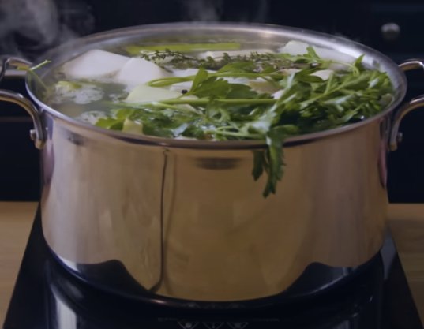

Homemade Chicken Stock

Description
Here's a recipe for your very own, super delicious, chicken stock!
Ingredients
- 4 Celery stalks
- 5 Carrots
- 2 Leeks
- 1 Parsnip
- 1 Turnip
- 1 Entire head of garlic
- 1 Yellow onion
- Around 800g of chicken spines or wings
- Vegetable oil
- Fresh thyme and parsley
Instructions
- Add roughly chopped and peeled aromatics like celery, carrots, leek, parsnip, onions, turnip, and garlic.
- Along with the vegetables, add in some chopped leftover chicken spine or neck. If not available, chicken wings will do.
- In a large pot (around 8 litres), add oil and bring to a shimmer then add in the chicken bones/wings and brown on high heat
- Once the chicken begins to brown, add in the vegetables, fresh herbs, and peppercorns.
- Bring stock to a bare simmer skimming any scum off the top. Simmer for 4-12 hours.
- Drain the solids out of the stock and set stock aside but keep warm or chilled until ready to use.